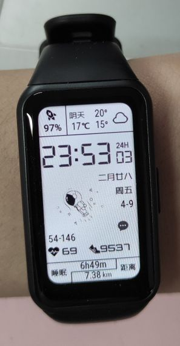
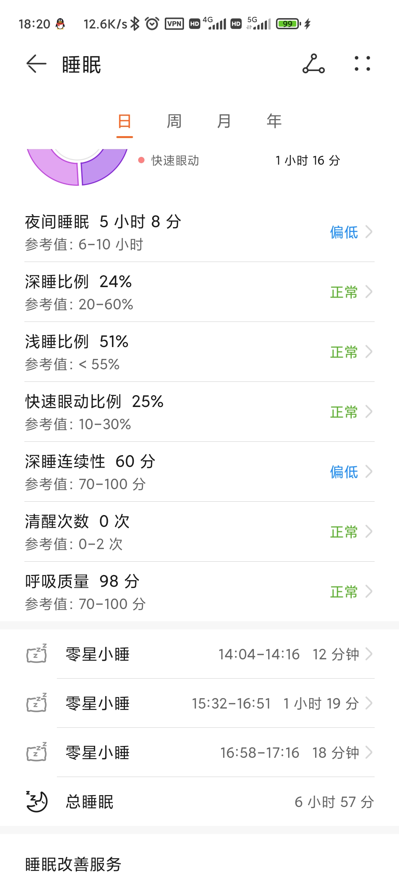

<!DOCTYPE html>
<html>
<head><meta name="generator" content="Hexo 3.9.0">
  <!-- hexo-inject:begin --><!-- hexo-inject:end --><meta charset="utf-8">
  <meta http-equiv="X-UA-Compatible" content="IE=edge">
  
  <title>运动手环的使用体验 | uint128&#39;s Blog</title>
  <meta name="description" content="uint128&#39;s blog">
  <meta name="keywords" content="uint128,uint128&#39;s blog,uint128.com">
  <meta name="HandheldFriendly" content="True">
  <meta name="apple-mobile-web-app-capable" content="yes">
  <link rel="shortcut icon" href="/">
  <link rel="alternate" href="/atom.xml" title="uint128's Blog">
  <meta name="viewport" content="width=device-width, initial-scale=1, maximum-scale=1">
  <meta name="description" content="我想买个运动手环来检测、记录我的睡眠情况。但是小米手环5已经出了很久了，想着买新不买旧，一直在等小米手环6的发布。结果小米手环6的厚下巴在“跑马屏”下显得十分不和谐，再加上很多人评价说睡眠监测的结果不准确，因此我最终买了荣耀手环6。">
<meta name="keywords" content="uint128,uint128&#39;s blog,uint128.com">
<meta property="og:type" content="article">
<meta property="og:title" content="运动手环的使用体验">
<meta property="og:url" content="https://uint128.com/2021/04/20/运动手环的使用体验/index.html">
<meta property="og:site_name" content="uint128&#39;s Blog">
<meta property="og:description" content="我想买个运动手环来检测、记录我的睡眠情况。但是小米手环5已经出了很久了，想着买新不买旧，一直在等小米手环6的发布。结果小米手环6的厚下巴在“跑马屏”下显得十分不和谐，再加上很多人评价说睡眠监测的结果不准确，因此我最终买了荣耀手环6。">
<meta property="og:locale" content="zh-cn">
<meta property="og:image" content="https://uint128.com/2021/04/20/运动手环的使用体验/QQ图片20210420105930.jpg">
<meta property="og:image" content="https://uint128.com/2021/04/20/运动手环的使用体验/QQ图片20210420110757.jpg">
<meta property="og:updated_time" content="2021-04-20T03:35:29.577Z">
<meta name="twitter:card" content="summary">
<meta name="twitter:title" content="运动手环的使用体验">
<meta name="twitter:description" content="我想买个运动手环来检测、记录我的睡眠情况。但是小米手环5已经出了很久了，想着买新不买旧，一直在等小米手环6的发布。结果小米手环6的厚下巴在“跑马屏”下显得十分不和谐，再加上很多人评价说睡眠监测的结果不准确，因此我最终买了荣耀手环6。">
<meta name="twitter:image" content="https://uint128.com/2021/04/20/运动手环的使用体验/QQ图片20210420105930.jpg">
    
  <link href="https://fonts.googleapis.com/css?family=Inconsolata|Titillium+Web" rel="stylesheet">
  <link href="https://fonts.googleapis.com/css?family=Roboto+Mono" rel="stylesheet">
  <link href="//cdnjs.cloudflare.com/ajax/libs/node-waves/0.7.5/waves.min.css" rel="stylesheet">
  <link rel="stylesheet" href="/style.css">
  <script>
    function setLoadingBarProgress(num) {
      document.getElementById('loading-bar').style.width=num+"%";
    }
  </script>
  <script src="/js/md5.js"></script>
<link rel="alternate" href="/atom.xml" title="uint128's Blog" type="application/atom+xml"><!-- hexo-inject:begin --><!-- hexo-inject:end -->
</head>
</html>
<body>
  <!-- hexo-inject:begin --><!-- hexo-inject:end --><div id="loading-bar-wrapper">
  <div id="loading-bar"></div>
</div>


  <script>setLoadingBarProgress(20)</script> 
  <header class="l_header">
	<div class='wrapper'>
		<div class="nav-main container container--flex">
			<a class="logo flat-box" href='/' >
				uint128's Blog
			</a>
			<div class='menu'>
				<ul class='h-list'>
					
						<li>
							<a class='flat-box nav-home' href='/'>
								Home
							</a>
						</li>
					
						<li>
							<a class='flat-box nav-archives' href='/archives'>
								Archives
							</a>
						</li>
					
						<li>
							<a class='flat-box nav-about' href='/about'>
								About
							</a>
						</li>
					
				</ul>
				<div class='underline'></div>
			</div>
			
				<div class="m_search">
					<form name="searchform" class="form u-search-form">
						<input type="text" class="input u-search-input" placeholder="Search" />
						<span class="icon icon-search"></span>
					</form>
				</div>
			
			<ul class='switcher h-list'>
				
					<li class='s-search'><a href='javascript:void(0)'><span class="icon icon-search flat-box"></span></a></li>
				
				<li class='s-menu'><a href='javascript:void(0)'><span class="icon icon-menu flat-box"></span></a></li>
			</ul>
		</div>
		
		<div class='nav-sub container container--flex'>
			<a class="logo" class="flat-box" href='javascript:void(0)'>
				Word of Forks
			</a>

			<ul class='switcher h-list'>
				<li class='s-comment'><a href='javascript:void(0)'><span class="icon icon-chat_bubble_outline flat-box"></span></a></li>
				<li class='s-top'><a href='javascript:void(0)'><span class="icon icon-arrow_upward flat-box"></span></a></li>
				<li class='s-toc'><a href='javascript:void(0)'><span class="icon icon-format_list_numbered flat-box"></span></a></li>
			</ul>
		</div>
	</div>
</header>
<aside class="menu-phone">
	<nav>
		
			<a href="/" class="nav-home nav">
				Home
			</a>
		
			<a href="/archives" class="nav-archives nav">
				Archives
			</a>
		
			<a href="/about" class="nav-about nav">
				About
			</a>
		
	</nav>
</aside>

    <script>setLoadingBarProgress(40);</script>
  <div class="l_body">
    <div class='container clearfix'>
      <div class='l_main'>
        <article id="post-运动手环的使用体验"
  class="post white-box article-type-post"
  itemscope itemprop="blogPost">
	<section class='meta'>
	<h2 class="title">
  	<a href="/2021/04/20/运动手环的使用体验/">
    	运动手环的使用体验
    </a>
  </h2>
	<time>
	  4月 20, 2021
	</time>
	
	</section>
	
		<section class="toc-wrapper"><ol class="toc"><li class="toc-item toc-level-2"><a class="toc-link" href="#屏幕和表盘"><span class="toc-number">1.</span> <span class="toc-text">屏幕和表盘</span></a></li><li class="toc-item toc-level-2"><a class="toc-link" href="#睡眠检测"><span class="toc-number">2.</span> <span class="toc-text">睡眠检测</span></a></li><li class="toc-item toc-level-2"><a class="toc-link" href="#运动检测"><span class="toc-number">3.</span> <span class="toc-text">运动检测</span></a></li><li class="toc-item toc-level-2"><a class="toc-link" href="#其他"><span class="toc-number">4.</span> <span class="toc-text">其他</span></a></li></ol></section>
	
	<section class="article typo">
  	<div class="article-entry" itemprop="articleBody">
    	<p>我想买个运动手环来检测、记录我的睡眠情况。但是小米手环5已经出了很久了，想着买新不买旧，一直在等小米手环6的发布。<br>结果小米手环6的厚下巴在“跑马屏”下显得十分不和谐，再加上很多人评价说睡眠监测的结果不准确，因此我最终买了荣耀手环6。<br><a id="more"></a></p>
<h2 id="屏幕和表盘"><a href="#屏幕和表盘" class="headerlink" title="屏幕和表盘"></a>屏幕和表盘</h2><p>先看看外观图。</p>
<p></p>
<p>很多人评价小米手环的窄屏幕才是手环的样子，荣耀手环的宽屏幕已经接近于手表了。但是我作为一个普通用户，并不想管手环和手表的准确定义，我只考虑用起来的实际体验。</p>
<p>荣耀手环的大屏幕真的很有优势，能显示的内容很多。在这个价值￥6的表盘下，常用的数据几乎同时显示了出来。</p>
<p>为什么我要强调这个表盘的价格呢？因为荣耀的表盘市场里免费的表盘真的好少，收费表盘的居多。相比之下，小米手环的免费表盘似乎丰富得多。（云体验，从别人的截图感受到的）</p>
<h2 id="睡眠检测"><a href="#睡眠检测" class="headerlink" title="睡眠检测"></a>睡眠检测</h2><p></p>
<p>睡眠检测其实是可以检测到各个睡眠周期的，也就是快速眼动、浅睡眠和深睡眠这三个睡眠周期，截图里没有体现出来。</p>
<p>我没法验证睡眠周期的检测准不准，但是入睡时间的检测我感觉还是准的。</p>
<p>比如截图里有 3 条零星小睡的记录，第一条记录是因为我感冒了，觉得很困，我上课趴着睡觉给检测到了。</p>
<p>这条记录被手环记录下来，我还是蛮震惊的。因为我听说手环检测睡眠的原理是检测手臂的运动，运动的幅度小就认为是睡着了。然而我趴着睡的时候，其实并不稳当，因为我旁边的同学一直在拍桌子，我也一直在晃。</p>
<p>第二条和第三条记录是我逃课回寝室睡的，中途醒来了一次，也被检测到了，分成了两条记录。</p>
<h2 id="运动检测"><a href="#运动检测" class="headerlink" title="运动检测"></a>运动检测</h2><p>自动运动检测需要在手环设置里开启，默认是不开启的。开启之后，如果手环检测到你在运动，会弹出提示询问你是否真的在运动。确认之后，就会记录这一次运动。</p>
<p>这里有一个比较人性化的设计。我一开始是不知道还有个确认运动的环节的，我跑步中途才发现手环有这个提示。我本以为确认之前的跑步数据会丢失。没想到的是，手环没有丢掉确认之前的运动数据，我从开始跑步到确认运动的数据都还留着（从里程数能看出来）。</p>
<h2 id="其他"><a href="#其他" class="headerlink" title="其他"></a>其他</h2><p>买来手环的前几天，每天起床的第一件事就是看晚上的睡眠质量如何，但是很快就懒得看了。我的睡眠习惯和运动习惯也没因为它变得更好。毕竟手环只是记录，要改变习惯还得看我自己。</p>

  	</div>
	  
		
	
		<div class="art-item-footer">
				
					<span class="art-item-left"><i class="icon icon-chevron-thin-left"></i>prev：<a href="/2021/05/08/C-和C-的值类型与引用类型/" rel="prev"  title="C++和C#的值类型与引用类型">
						C++和C#的值类型与引用类型 
					</a></span>
				
				
					<span class="art-item-right">next：<a href="/2021/02/13/船舶目标检测-使用Darknet训练yolo模型的过程记录/" rel="next"  title="船舶目标检测:使用Darknet训练yolo模型的过程记录">
						船舶目标检测:使用Darknet训练yolo模型的过程记录
					</a><i class="icon icon-chevron-thin-right"></i></span>
				
		</div>
	
	</section>


	

</article>


	<div id="gitalk-container"></div>
	<link rel="stylesheet" href="https://unpkg.com/gitalk/dist/gitalk.css">

<script src="https://unpkg.com/gitalk/dist/gitalk.min.js"></script>

 <script type="text/javascript">
      var gitalk = new Gitalk({
        clientID: '53e3c578fcb7b7b1a4da',
        clientSecret: '74433ee77d6e13fd635b82add519e143ac791726',
        repo: 'cyanray.github.io',
        owner: 'cyanray',
        admin: ['cyanray'],
        id: CryptoJS.MD5(location.pathname).toString(),
        labels: ['Gitalk'],
        perPage: 15,
        pagerDirection: 'last',
        createIssueManually: true,
        distractionFreeMode: false
      })

      gitalk.render('gitalk-container')
 </script>


<script>
	window.subData = {
		title: '运动手环的使用体验',
		tools: true
	}
</script>

      </div>
      <aside class='l_side'>
        
  <section class='m_widget about'>
    
            <div class='header'>
                uint128.com
            </div>
            <div class='content'>
                <div class='desc'>uint128, unsigned int.<br>Uint128 Is Not a Type with 128 bits.</div>
            </div>
</section>

  <section class='m_widget links'>
<div class='header'>Links</div>
<div class='content'>
    <ul class="entry">
    
        <li><a class="flat-box" target="_blank" href="https://github.com/cyanray">
            <div class='name'>My Github</div>
        </a></li>
    
        <li><a class="flat-box" target="_blank" href="https://yuanxingxing-yxx.github.io/">
            <div class='name'>星星的博客</div>
        </a></li>
    
        <li><a class="flat-box" target="_blank" href="http://www.h13studio.com/">
            <div class='name'>H13-Studio</div>
        </a></li>
    
        <li><a class="flat-box" target="_blank" href="http://quosimodo.cn/">
            <div class='name'>卡西莫多の礼物</div>
        </a></li>
    
        <li><a class="flat-box" target="_blank" href="http://www.dora-kong.com/">
            <div class='name'>哆啦控 - dora-kong.com</div>
        </a></li>
    
        <li><a class="flat-box" target="_blank" href="https://blog.icepie.net/">
            <div class='name'>icepie&#39;s blog</div>
        </a></li>
    
    </ul>
</div>
</section>

      </aside>
      <script>setLoadingBarProgress(60);</script>
    </div>
  </div>
  <footer id="footer" class="clearfix">

	<div class="social-wrapper">
  	
      
        <a href="https://github.com/cyanray" class="social github"
          target="_blank" rel="external">
          <span class="icon icon-github"></span>
        </a>
      
    
  </div>
  
  <div>Theme <a href='https://github.com/stkevintan/hexo-theme-material-flow' class="codename">MaterialFlow</a> designed by <a href="http://keyin.me/" target="_blank">Kevin Tan</a>.</div>
  
</footer>


  <script>setLoadingBarProgress(80);</script>
  

<script src="//apps.bdimg.com/libs/jquery/2.1.4/jquery.min.js"></script>
<script src='//cdnjs.cloudflare.com/ajax/libs/node-waves/0.7.5/waves.min.js'></script>
<script src="//cdnjs.cloudflare.com/ajax/libs/scrollReveal.js/3.3.2/scrollreveal.min.js"></script>
<script src="/js/jquery.fitvids.js"></script>
<script>
	var GOOGLE_CUSTOM_SEARCH_API_KEY = "";
	var GOOGLE_CUSTOM_SEARCH_ENGINE_ID = "";
	var ALGOLIA_API_KEY = "";
	var ALGOLIA_APP_ID = "";
	var ALGOLIA_INDEX_NAME = "";
  var AZURE_SERVICE_NAME = "";
  var AZURE_INDEX_NAME = "";
  var AZURE_QUERY_KEY = "";
  var BAIDU_API_ID = "";
  var SEARCH_SERVICE = "hexo";
  var ROOT = "/"||"/";
  if(!ROOT.endsWith('/'))ROOT += '/';
</script>
<script src="/js/search.js"></script>
<script src="/js/app.js"></script>


  
    <script type="text/x-mathjax-config">
      MathJax.Hub.Config({
          tex2jax: {
            inlineMath: [ ['$','$'], ["\\(","\\)"] ],
            processEscapes: true
          }
        });
      </script>
    
    <script type="text/x-mathjax-config">
      MathJax.Hub.Config({
            tex2jax: {
              skipTags: ['script', 'noscript', 'style', 'textarea', 'pre', 'code']
            }
          });
      </script>
    
    <script type="text/x-mathjax-config">
      MathJax.Hub.Queue(function() {
              var all = MathJax.Hub.getAllJax(), i;
              for(i=0; i < all.length; i += 1) {
                  all[i].SourceElement().parentNode.className += ' has-jax';
              }
          });
      </script>
    
    <script type="text/javascript" src="https://cdnjs.cloudflare.com/ajax/libs/mathjax/2.7.4/MathJax.js?config=TeX-MML-AM_CHTML">
    </script>
    
  <script>setLoadingBarProgress(100);</script><!-- hexo-inject:begin --><!-- Begin: Injected MathJax -->
<script type="text/x-mathjax-config">
  MathJax.Hub.Config("");
</script>

<script type="text/x-mathjax-config">
  MathJax.Hub.Queue(function() {
    var all = MathJax.Hub.getAllJax(), i;
    for(i=0; i < all.length; i += 1) {
      all[i].SourceElement().parentNode.className += ' has-jax';
    }
  });
</script>

<script type="text/javascript" src="https://cdnjs.cloudflare.com/ajax/libs/mathjax/2.7.4/MathJax.js?config=TeX-MML-AM_CHTML">
</script>
<!-- End: Injected MathJax -->
<!-- hexo-inject:end -->
</body>
</html>
